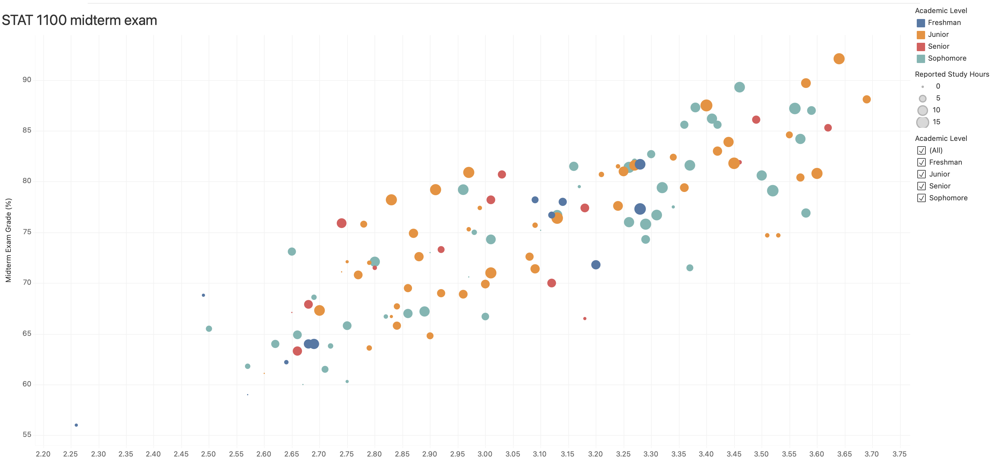

SVU Midterm
Once again, the instructions are not as detailed as module 9. You may need to collaborate with your peers today.
I suggest you don’t leave the lab before you finish it.
If you need any help, please let me know.
Scatter plot
-
Create a new document in Tableau Public and upload the
SVU midterm.csvfile. -
On Sheet 1, make the Current GPA the x‑axis and the Midterm Exam Grade your y‑axis.
-
You want the data visualization as Circle.
-
Give each Academic Level its own color and make the Reported Study Hours vary by size.
-
Create a filter for Academic Level and make it visible.
Dashboard
-
Create a New Dashboard and change its size to 1400px × 800px.
-
Add Sheet 1 to the dashboard.
-
Edit the title of the graph as STAT 1100 midterm exam. Set the type to Tableau Book, 18pt.

Visualize and share your dashboard
-
Click on the × next to your name on the top‑right of the page.
-
Click the Share button.
-
Click on the Copy Link button.
-
Paste the link on a new tab of your browser.
-
Copy the new URL from the address bar on the browser. (That’s the URL you need to submit on Canvas.)
Submission
Submit the second URL to Canvas.